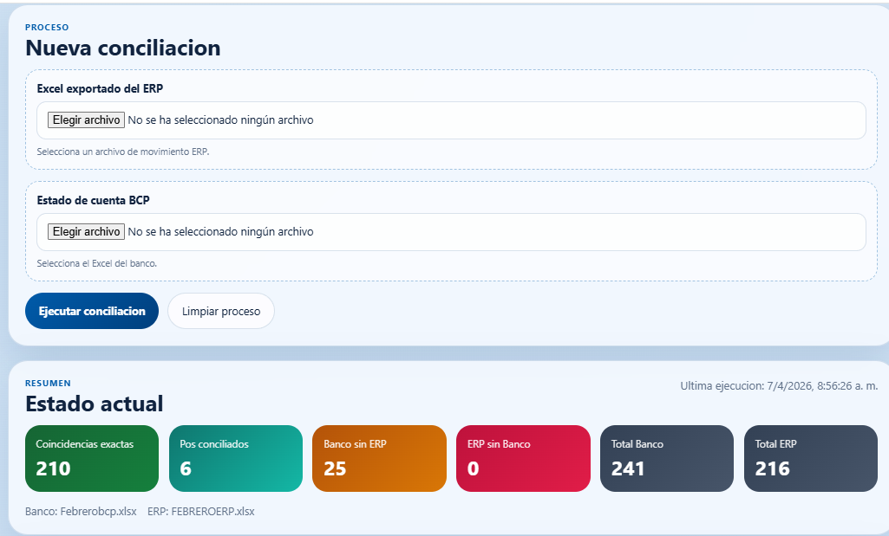

El problema
La conciliación de montos entre el estado de cuenta bancario y los registros del ERP ha sido, tradicionalmente, un proceso manual, repetitivo y altamente dependiente de herramientas como Excel.
En la práctica, este trabajo implicaba:
Uso de tablas dinámicas para agrupar información
Cruce manual de datos entre archivos
Validación visual de montos en pantalla
Resaltado de celdas para identificar coincidencias
Este enfoque no solo consumía tiempo, sino que además presentaba limitaciones importantes:
Falta de trazabilidad
Alto riesgo de error humano
Dependencia de la experiencia del usuario
Baja eficiencia en grandes volúmenes de información
Como resultado, una tarea clave para el control financiero terminaba siendo operativa en lugar de analítica.
La conciliación no aportaba valor estratégico, sino que se convertía en una carga administrativa.
Qué propone esta iniciativa
La propuesta consiste en transformar completamente este proceso mediante una aplicación web automatizada, desarrollada con apoyo de inteligencia artificial.
El nuevo enfoque permite:
Cargar directamente los archivos Excel del ERP y del banco
Estandarizar automáticamente la información (fecha, operación, cargos y abonos)
Ejecutar la conciliación en segundos
Identificar coincidencias exactas y diferencias
Clasificar resultados de forma clara e inmediata
El sistema no solo compara datos, sino que organiza la información para que sea fácilmente interpretable y accionable.
Además, incorpora funcionalidades clave como:
Visualización de movimientos conciliados
Identificación de faltantes en ERP
Identificación de faltantes en banco
Opciones para marcar registros como corregidos
Filtros dinámicos para análisis rápido
En esencia, lo que antes requería múltiples pasos manuales, ahora se resuelve en un solo clic.
Qué aportaría al negocio
EFICIENCIA
Reducción drástica del tiempo operativo. Procesos que tomaban horas ahora se ejecutan en segundos.
PRECISIÓN
Eliminación de errores humanos en la validación manual de información.
VISIBILIDAD
Acceso inmediato a diferencias, coincidencias y pendientes de conciliación.
CONTROL
Mayor trazabilidad y seguimiento del proceso de conciliación.
ESCALABILIDAD
Capacidad de manejar grandes volúmenes de información sin incrementar recursos operativos.
Aprendizajes clave
El valor no está en cruzar datos, sino en automatizar el proceso para liberar tiempo de análisis.
Excel sigue siendo una herramienta potente, pero no es suficiente para procesos repetitivos y críticos.
La automatización permite pasar de validación manual a control inteligente.
La conciliación deja de ser una tarea operativa y se convierte en una herramienta de gestión financiera.
Conclusión colaborativa
La evolución de la conciliación bancaria refleja un cambio más amplio en la gestión empresarial: pasar de procesos manuales a sistemas automatizados orientados a la eficiencia y la toma de decisiones.
Lo que antes requería tablas dinámicas, filtros y validaciones visuales, hoy puede resolverse en segundos mediante una solución web automatizada.
No se trata solo de hacer lo mismo más rápido. Se trata de hacer mejor el proceso.
Y en este caso, la diferencia es clara: de horas de trabajo manual a un solo clic.
